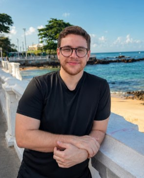

Sobre Mim

Olá! Sou Rodrigo Arruda, pesquisador e doutorando no Departamento de Matemática Pura da Universidade Federal de Minas Gerais (UFMG), sob a orientação de Pablo Daniel Carrasco.
Meus principais interesses em matemática concentram-se em Sistemas Dinâmicos e Teoria Ergódica.
Ensino
Bem-vindo à minha página de ensino. Aqui você encontrará informações sobre as disciplinas em que atuo, notas de aula e materiais de apoio.
(Em construção...)
Pesquisa e Publicações
Publicados
- Continuum-wise hyperbolic homeomorphisms on surfaces
com A. Sarmiento e B. Carvalho. Discrete and Continuous Dynamical Systems, 2023.
Pre prints
- (Em construção...)
Visitas técnicas
- (Em construção...)
Curiosidades Matemáticas
Um espaço para compartilhar ideias interessantes, teoremas elegantes e fatos curiosos que chamam minha atenção.
(Em construção...)
(Em construção...)